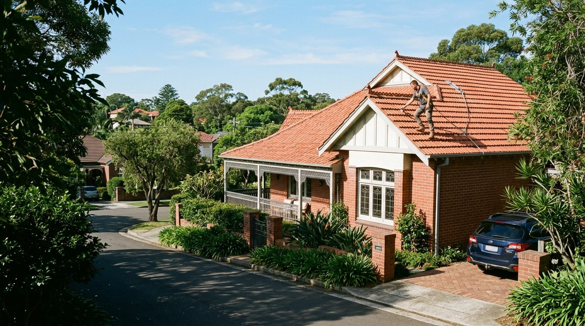
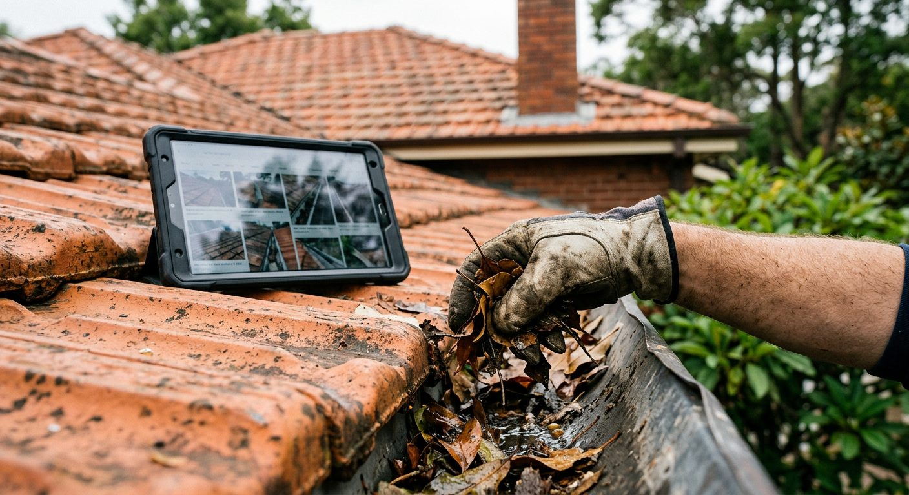

Call or send the details
Describe what you have noticed: a stain on the ceiling, overflowing gutters, cracked pointing, slipped tiles. Phones are answered 24 hours, 7 days.
Roof repairs & maintenance · Sydney
Over two decades of roof repairs, gutter cleaning and tile work across Sydney. Free quotes, a photo report on every job, and a 100% Service Guarantee.

Roof work, clearly scoped
Seven services covering the whole water path: where it lands, where it runs, and where it gets in. Every job is photographed from start to finish.
The signature of the service
You rarely get to stand on your own roof. So Steve brings it down to you: photographs of every problem area, an explanation of what caused it, and a clear plan for the repair before a single tile is lifted.

Why homeowners call Steve
Good roof care starts with the specific problem, not a one-size-fits-all answer. Steve Vella has spent more than twenty years keeping Sydney roofs dry.
Describe what you have noticed: a stain on the ceiling, overflowing gutters, cracked pointing, slipped tiles. Phones are answered 24 hours, 7 days.
Steve gets on the roof safely — harnessed, insured and OH&S certified — and photographs what he finds, including the parts you cannot see from the ground.
You see the photos, hear what caused the problem and get a free quote for the work that actually fixes it.
The work is completed and photographed again, covered by a 100% Service Guarantee.
Join the free 6- or 12-month reminder programme and the next clean or check comes to you.
4.1 ★ from 173 Google reviews
"Steve profession, prompt and reliable. Extremely thorough and efficient in all aspects of work and quoting. Communicates very well and does an amazing job."Catherine F. · Google
"Steve Vella is a great guy and a pleasure to deal with. Highly recommended if you want your roof looked after."Stewart B. · Google
Service area
Servicing all of Sydney, from the Eastern Suburbs to the Hills District. No street address needed — Steve comes to the roof.
Free quotes · Open 24/7
Call Steve directly, message on WhatsApp, or send the details and get a free quote with photos.
Home / Services
Seven services, one standard
From routine gutter cleaning to rebuilding a valley, each job starts with an inspection and ends with photos of the finished work.
Included on every job
Every job is photographed, so you see the problem and the finished repair.
No charge to look, explain and price the work.
Fully insured, OH&S certified and working in roof harnesses.
The work is backed by Steve's 100% Service Guarantee.
Describe what you are seeing. Steve will work out the cause and tell you what it needs.
What it is
If you notice any of these, it is worth a call.
How the job is done
Every stage is recorded, so you can see exactly what was found and what was fixed.
Related services
Free quote · Photo report
Call or message Steve, any day, any hour. The quote is free and comes with photos.
Home / About
Steve Vella · The Sydney Roof Doctor
One roofer, a camera and a careful way of working.
The story
Steve Vella has spent more than twenty years keeping Sydney roofs dry. Every inspection comes with a detailed photo report, so you can see the problem and know exactly how it'll be fixed.
That habit is what customers mention most. Reviews describe Steve as thorough, prompt and a clear communicator who talks you through what the problem is and how he will fix it, every step of the way.
The business trades through Vella Investments Aust Pty Ltd and holds NSW trade licence 275484C.
How Steve works
A photo record on every job. You see the fault before you approve the repair.
What failed, why, and what the repair involves, without jargon.
Fully insured, OH&S certified, and always harnessed on the roof.
A 100% Service Guarantee, and a free reminder programme to keep the roof on schedule.
Credentials
The details below are the business's own registered identifiers.
No call centre. Ring, message or email and Steve will come back to you.
Home / Service areas
Servicing all of Sydney
Steve works across six regions of Sydney. If your suburb is not listed, call — chances are it is covered.
Coastal exposure, salt air and older terraces.
Leafy streets and gutters that fill fast.
Federation homes and terracotta tiles.
Larger roofs, valleys and whirlybirds.
Terraces, tight access and shared walls.
Residential and commercial roofs in the CBD fringe.
Suburbs listed are examples within each region.
Almost certainly. Call or message and Steve will confirm.
Home / Reviews
Google reviews
In their own words, unedited, from the business's Google listing.
"Steve profession, prompt and reliable. Extremely thorough and efficient in all aspects of work and quoting. Communicates very well and does an amazing job."Catherine F. · Google
"Steve Vella is efficient, detailed in his work and communicates with you every step of the way. He comes in and does a very detailed report and provides photos. He talks you through what the problem is and how he will fix it."Carolyn B. · Google
"Steve Vella is a great guy and a pleasure to deal with. Highly recommended if you want your roof looked after."Stewart B. · Google
The common thread
Across the reviews, the same things come up: the detail of the report, the photos, and being told what the problem is and how it will be fixed. That is the service, by design.
Free quote, photo report, 100% Service Guarantee.
Home / FAQ
Questions, answered
General guidance for Sydney homeowners. For your roof specifically, a free inspection is the honest answer.
Often you can't from inside. Water can travel along battens and rafters before it drips, so the stain on your ceiling may be metres from the entry point. Common culprits are cracked or slipped tiles, failed pointing on ridge caps, rusted or blocked valleys and overflowing gutters. An inspection traces the path, and the photo report shows you where it starts.
It depends on the trees around you. Many homes manage with a clean every 6 to 12 months; leafy North Shore and Hills District properties often need it more often, especially before storm season. Steve's free 6- or 12-month reminder programme is designed for exactly this.
The ridge caps along the top of a tiled roof sit on a bed of mortar (bedding) and are sealed with a flexible or cement compound (pointing). Over years of sun, heat and movement, it cracks and comes away, letting water in and loosening caps. Re-bedding and re-pointing restores the seal.
Most of the time, individual cracked or broken tiles can be replaced on their own. Where tiles are porous or weathered across the roof, sealing may be an option. The photo report lets you see the condition and weigh the choice with Steve.
A valley is the channel where two roof slopes meet; it carries a lot of water. Rust, holes, debris build-up or poorly bedded tiles along its edge can all cause leaks. A rusted-through valley is usually replaced rather than patched.
Whirlybirds are wind-driven roof vents that let hot, moist air escape the roof space. They can help reduce heat build-up and condensation in the ceiling cavity. Steve can advise on whether your roof suits one and where it should go.
The business is open 24 hours, 7 days. Call +61 419 162 112 and talk to Steve about how soon he can attend.
Yes. Quotes are free, and the inspection comes with photos so you understand what you're being quoted for.
Yes. The Sydney Roof Doctor holds NSW trade licence 275484C, is fully insured and OH&S certified, and uses roof harnesses on the job.
Put a bucket under the drip, move valuables and electronics away, and if the ceiling is bulging with water, keep clear of it. Don't climb onto a wet roof yourself. Then call and describe what you're seeing.
Home / Contact
Free quotes · Open 24/7
Send the details below and your email app will open with the enquiry ready to go. Or call Steve directly, any hour.
Your email app should have opened with your enquiry. Press send and Steve will be in touch. If nothing opened, email steve@tsrd.com.au or call 0419 162 112.
Hours
Servicing all of Sydney
Google Maps
4.1★ · 173 reviews · View the listing ↗